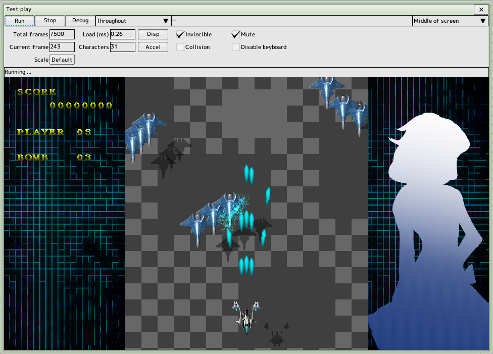
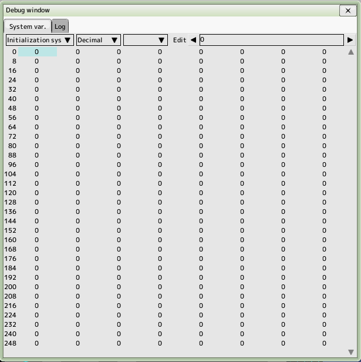

back to the original page
back to the original page
Test Play

Cautions
All changes are overwritten in the project file when you run the test play
You can change it in Editor settings
Test Contents
- Throughout
All scenes from beginning to end
- Stage
Stage Drop it on the run window to enter this mode
- Character
Character Drop it on the run window to enter this mode. You can select a position.
- Formation
Formation Drop it on the run window to enter this mode. You can select a position.
- Barrage
Barrage Drop it on the run window to enter this mode. You can select a position.
- Debug
Press the debug button to open the debug information window
You can also switch between the above modes using the combo box
- Total frames
Total number of frames set for the stage being run
- Current frame
Current frame of the stage being executed
- Scale
Window size for debugging, valid for debugging only
- Load and display buttons to switch between the following
- ms (milliseconds)
The time taken to process one frame
- FPS
Frame rate in seconds
- Total number of characters
Number of characters appearing
- Invincible
God Mode
- Mute
Mute all sounds
- Collision
Hit box drawing
- Disable keyboard
Disable keyboard controls in the game
- Velocity change
Low speed, acceleration, stop, frame advance
Shortcut Keys
Available even if another edit window is active
- F5
Execute. If running, re-execute
- F6
Stop
- CTRL+D
Display debug window
Debug Window

- You can view and change the system variables in the running game, choose which one you want
- Flag to be initialized at the start of the game
- Flag to be saved even after the game ends
You can select the display format and number of digits to be displayed
When one digit is displayed, the system variable name is displayed.
- Click on the area you want to change with your mouse. Or press the ENTER key
Edit the numbers in the upper right edit box and press the ENTER key to reflect them.
- Log
The contents of the script command "Variable - Debug" are displayed
The contents of the watch set system variables are displayed.
- You can configure the watch from the right-click menu
The contents of each system variable are output to the log when it is read or written.
Back to the top of the page